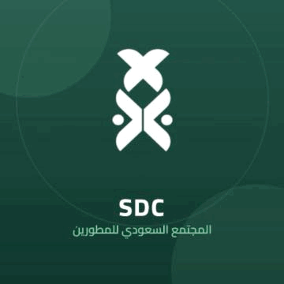

رسالة جديدة
المستخدم ينتظر عملًا متقنًا
في مشروعنا بيانات حسّاسة واختبار فاشل وتعارض في الكود مهمّتك إصلاحها قبل الإطلاق
</>⑂>_المجتمع السعودي للمطورين

المجتمع السعوديالمشروع جاهز تقريبًا
ثلاثة أعطال تفصلنا عن الإطلاق
افتح اللابتوب تتبّع
الأخطاء واترك أثرك
في مشروعنا بيانات حسّاسة واختبار فاشل وتعارض في الكود مهمّتك إصلاحها قبل الإطلاق